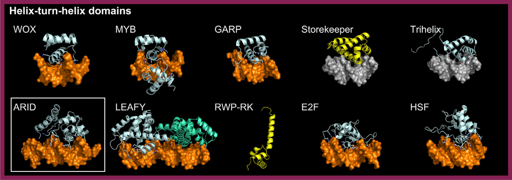

ARID domains specialize in binding AT-rich DNA regions. In plants, this class is represented by a single family, ARID. Although some ARID proteins are associated with an HMG-box domain, structural models suggest that DNA binding is primarily mediated by the ARID domain [src].
